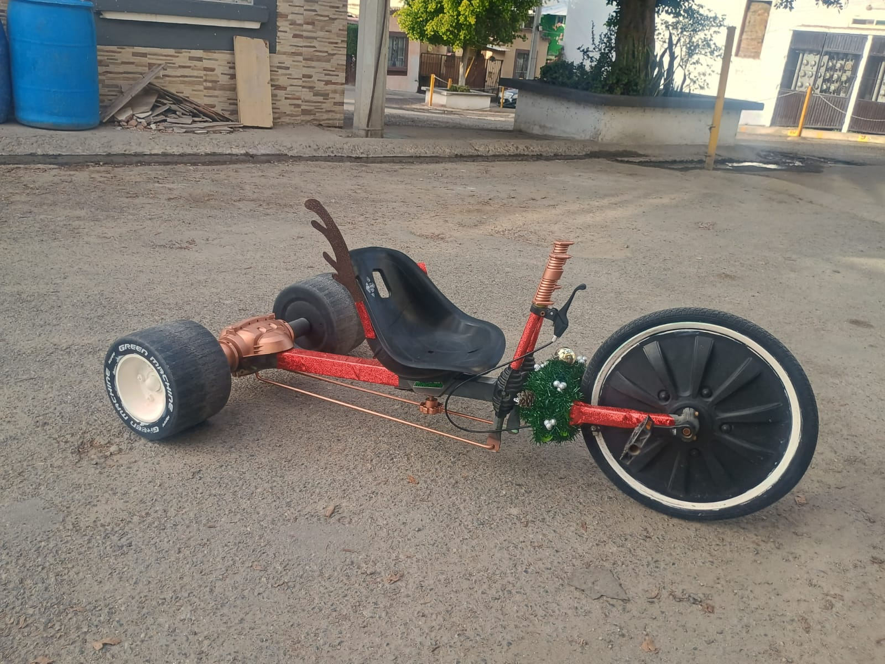
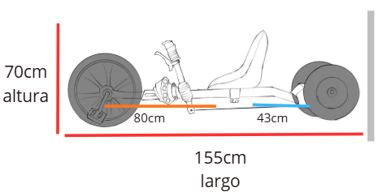
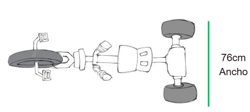
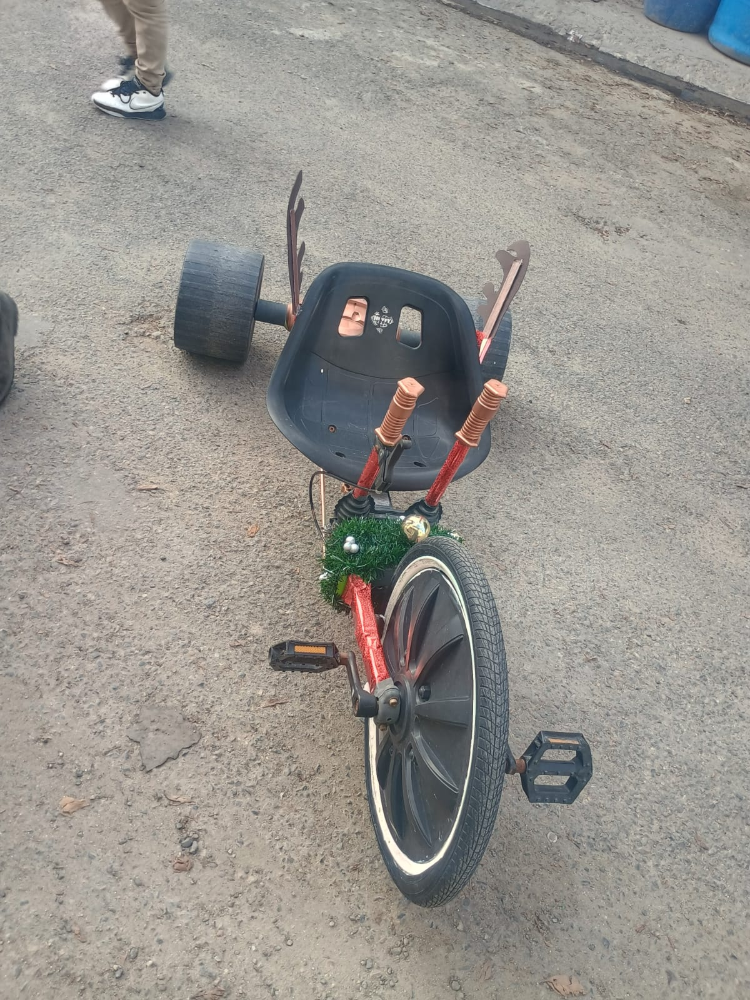
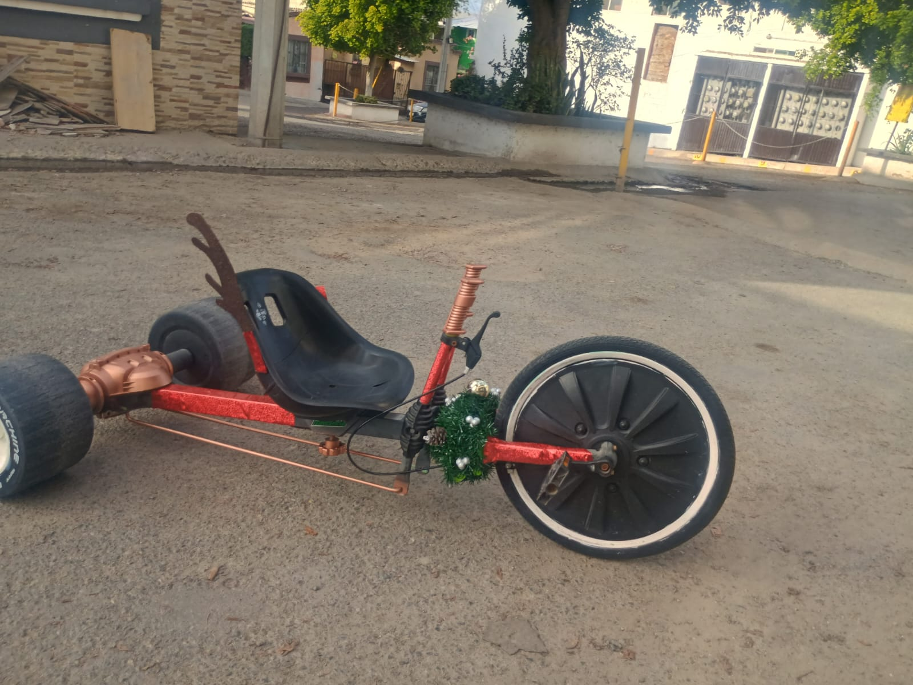

¡Conoce nuestro proyecto!
Este es nuestro proyecto de Go Kart, en el que trabajamos en equipo para diseñar y construir nuestro propio vehículo.

Introducción
el proyecto en el que estamos actualmente trabajando en equipo es en la creacion y diseñar un Go Kart, teniendo como objetivo es usar los conocimientos que hemos aprendido en diferentes aignaturas. tomando en cuenta los calculos matematicos y fisicos, las medidas de seguridad y la eleccion de materiales. Este proyecto nos ayuda desarrollar las habilidades para poder resolver problemas y poder trabajar mejor en equipo.
Para ello, tomamos en cuenta los cálculos matemáticos y físicos, las medidas de seguridad y la elección de los materiales.
Este proyecto también nos ayuda a desarrollar habilidades para resolver problemas y trabajar mejor en equipo.
Objetivos
Buscamos que el diseño fuera cómodo e innovador, dando un guiño a las festividades de diciembre.
Para construir nuestro Go Kart utilizamos:
- Tubos de metal cuadrados para formar el chasis y la estructura principal.
- Barras de metal para los soportes.
- Tres ruedas: dos del mismo tamaño y una más grande para facilitar el pedaleo.
- Un eje metálico trasero para conectar las ruedas y permitir su movimiento.
- Un asiento cómodo.
- Un volante para controlar la dirección.
- Dos cables de freno.
- Tornillos y tuercas para unir las piezas.
- Soportes metálicos.
Descripción general del Go Kart
Nuestro Go Kart es un prototipo diseñado para moverse mediante pedales. Cuenta con tres ruedas y busca ofrecer buena maniobrabilidad y un sistema de dirección funcional.
Tipo de vehículo
Es un Go Kart manual de tres ruedas impulsado mediante pedales.
Materiales principales
Los materiales que conforman el go-kart es principalmente los tubos de metal, y el plastico utilizado en las areas color bronce que son principalmente diseño, ruedas, asiento comodo y dos cables de freno con las palancas de direccion.
Tipo de ruedas:
La de adelante es una llanta normal de hule con aire como de bici, es mas grande que las traseras. las llantas traseras son de plástico liso y anchas. son mas pequeñas que la delantera.
como se maneja:
No tiene volante, en su lugar se le coloco dos palancas a los lados, si jalas una mueven unas varillas por debajo que hacen que el eje de atras gire las llantas y el carro cambie de direccion.
como frena:
para frenar se utiliza la palanca del lado derecho que lleva un freno.
Características
- Materiales: metal, plástico, cartón, pintura en aerosol y pegamento.
- Dimensiones: 120 cm de largo y 64 cm de ancho.
- Propulsión: sistema manual mediante pedales.
- Dirección: control mediante volante.
- Frenado: sistema con dos cables de freno.
Materiales y herramientas
materiales utilizados:
Diseño y plano técnico
bocetos del vehiculo


Proceso de construcción
Durante la construcción trabajamos en equipo para ensamblar las piezas y dar forma a nuestro Go Kart.


Cálculos matemáticos y físicos
Para analizar el funcionamiento del Go Kart, consideramos los siguientes datos:
- Masa del Go Kart: 16 kg.
- Masa del conductor: 52 kg.
- Masa total: 68 kg.
- Velocidad inicial: 12 km/h.
- Velocidad convertida: 3.33 m/s.
- Distancia de frenado: 3.0 m.
- Tiempo de frenado: 1.8 s.
- Coeficiente de fricción: μ = 0.5.
- Gravedad: 9.81 m/s².
- Formula: Ec = ½ m v²
- Sustitucion: Ec = ½ (68)(3.33)² Ec = 34(11.0889)
- resultado: Ec = 377.02 J
- formula: Ff = μmg
- sustitucion: Ff=(0.5)(68)(9.81) Ff=(0.5)(667.08)
- resultado: Ff=333.54N
- Datos: v = 3.33m/s , μ= 0.5 , g = 9.81m/s2
- Formula: d= v2 / 2μg
- sustitucion: d=(3.33)2 / 2(0.5)(9.81)
- resultado: d=1.13 m
Paso A: Calcular la Energía Cinética (Ec) del carro en movimiento
Antes de frenar, el carro acumula energía debido a su masa y velocidad.
Paso B: Calcular la Fuerza de Fricción Máxima de las llantas
Es la fuerza que amarra el carro al piso cuando se bloquean las ruedas.
Datos a utilizar :
Paso C: Calcular la Distancia de Frenado Teórica (d)
Programación y página web
Desarrollamos esta pagina con html para organizar el contenido y CSS para darle color y creatividad a la pagina.
Documentación técnica en inglés
1. How to Brake To brake, use the lever on the right side, which is equipped with a brake.
2. Explanation of Why the Go-Kart Cannot Reverse The go-kart cannot move in reverse, so you will have to make a complete turn with it to travel in the opposite direction.
3. How to Turn Using the Levers The left lever will cause the rear wheels to turn to the right, while the right lever will cause them to turn to the left. It is important to keep this in mind when driving.
4. How to Adjust the Seat There is an adjustable screw underneath the seat that allows you to change its position according to the driver's height or leg length, making the seat more comfortable.
Video del proyecto
Nuestro video del proyecto
Galería de imágenes


Resultados y observaciones
resultados
como resultado del proyecto, tenemos un go kart semi montado. y entonces planificamos llevar a cabo revisar que le faltaba y que podiamos agregarle, incluyendo limpieza, mantenimiento y aumentar su atractivo visual.
Observaciones
durante el avance del go kart evaluamos el estado actual que tenia y definir que partes requerian mantenimiento, luego procedimos con la personalización, usando como inspiraciones una tematica de navidadad y finalmente terminamos usando el trabajo en equipo y conocimientos que adquirimos anteriormente.
Integrantes del equipo
- Alamilla Corral Irene Sofia
- Campuzano Lugo Camilo Emiliano
- Gonzales Lopez Emma Laura
- Heredia Ruiz Estefania Estrella
- Hernandez Martinez Ruben
- Ramirez Ruiz Jade Sthephani
- Zavala Rodriguez Adela Liliana
Cada integrante contribuye con sus ideas y sugerencias. Seguimos trabajando en equipo para crear un Go Kart original y creativo.